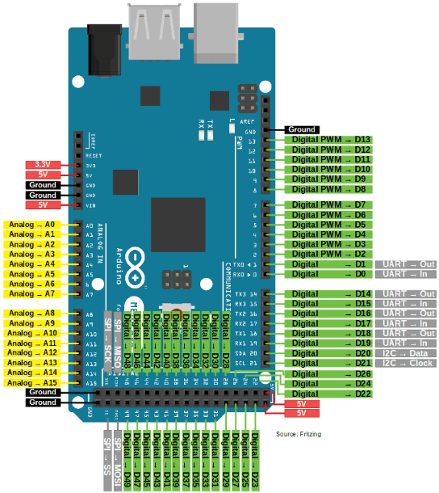

📟 Arduino Mega 2560 - Pinout Completo
Diagrama de distribución de pines y especificaciones técnicas del Arduino Mega 2560
Diagrama de Pines

Especificaciones Técnicas
Microcontrolador
- Chip: ATmega2560
- Voltaje de operación: 5V
- Voltaje de entrada (recomendado): 7-12V
- Voltaje de entrada (límite): 6-20V
Entradas/Salidas Digitales
- Pines I/O digitales: 54 (D0-D53)
- Pines PWM: 15 (D2-D13, D44-D46)
- Corriente máxima por pin I/O: 20 mA
- Corriente máxima pin 3.3V: 50 mA
Entradas Analógicas
- Pines analógicos: 16 (A0-A15)
- Resolución ADC: 10 bits (0-1023)
- Voltaje de referencia: 5V (por defecto)
Memoria
- Flash Memory: 256 KB (8 KB usado por bootloader)
- SRAM: 8 KB
- EEPROM: 4 KB
Comunicación
- UART: 4 (Serial, Serial1, Serial2, Serial3)
- SPI: Sí (pines 50 MISO, 51 MOSI, 52 SCK, 53 SS)
- I2C/TWI: Sí (pines 20 SDA, 21 SCL)
Otros
- Frecuencia de reloj: 16 MHz
- LED integrado: Pin 13
- Conexión USB: USB-B
- Conector de alimentación: Jack DC 2.1mm
- Interrupciones externas: 6 (pines 2, 3, 18, 19, 20, 21)
Pines de Comunicación y PWM
| Categoría | Pines | Descripción |
|---|---|---|
| PWM | 2-13, 44-46 | 15 pines con modulación por ancho de pulso |
| Serial 0 | 0 (RX), 1 (TX) | Puerto serial principal (USB) |
| Serial 1 | 19 (RX), 18 (TX) | Puerto serial adicional |
| Serial 2 | 17 (RX), 16 (TX) | Puerto serial adicional |
| Serial 3 | 15 (RX), 14 (TX) | Puerto serial adicional |
| I2C/TWI | 20 (SDA), 21 (SCL) | Comunicación I2C |
| SPI | 50 (MISO), 51 (MOSI), 52 (SCK), 53 (SS) | Comunicación SPI |
| Interrupciones | 2, 3, 18, 19, 20, 21 | 6 pines de interrupción externa |
| Analógicas | A0-A15 | 16 entradas analógicas (también digitales D54-D69) |
⚠️ Advertencias Importantes
- No exceder 5V en los pines I/O
- Corriente máxima total de todos los pines: 200 mA
- Los pines de comunicación serial deben evitarse si se usan los UARTs
- El Mega tiene 4 puertos seriales independientes para comunicación simultánea
💡 Ventajas del Mega
- 54 pines digitales para proyectos complejos
- 4 puertos seriales para múltiples dispositivos
- 16 entradas analógicas vs 6 del Uno
- 256 KB de memoria Flash para programas grandes
- Ideal para robots, CNC, impresoras 3D